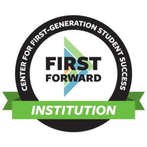

Am I a first-generation college student?
At the University of Michigan, undergraduates and graduate students are considered first-generation college students if neither parent or guardian has completed a 4-year college or university degree. This definition includes students with other family members (siblings, cousins, grandparents, etc.) who have completed a four-year degree.

First Forward Institution
The University of Michigan – Ann Arbor is proud to be named as a First-Gen Forward Institution by the NASPA Center for First-generation Student Success. This designation recognizes our commitment to improving the experience and outcomes of first-generation college students.